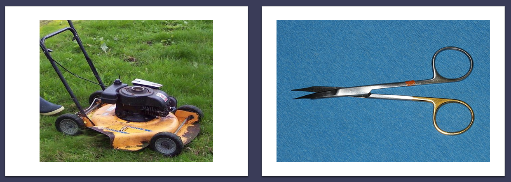

Komentorivi ja tekstinlouhinta
Antti Härkönen
2021-11-09
Tutkimusdatan organisointi
Datan muoto
- data tiedostossa: onko koneen luettavissa -> silloin yleensä myös saavutettava ja helpommin muunnettavissa formaatista toiseen
- avoimet ja ”agnostiset” (platform agnostic) formaatit suositeltavia
- esimerkki: utf-8 ja mojibake (korjattavissa pythonilla: ftfy)
Tekstidata
- jos data on pelkkää tekstiä ja numeroita, kannattaa käyttää tekstipohjaisia formaatteja (md, txt, csv)
- binäärimuotoinen tekstidata (docx) on vaikeampaa käyttää
Datan tallennus
- merkityksellinen ja looginen kansiorakenne
- kansiorakenne voi sisältää informaatiota datan keskinäisistä suhteista
Tiedostojen nimeäminen
- erottava tieto nimen loppuun
- välilyönnit ovat esim. komentorivillä merkitseviä erottajia, siksi niitä kannattaa välttää
| nimikonventio | esimerkki |
|---|---|
| camel case | suurtenMuinaistenAika |
| snake case | suurten_muinaisten_aika |
| kebab case | suurten-muinaisten-aika |
Päivämäärät
- ISO-standardin 8601 mukainen pvm: vvvv-kk-pp
- pvm alussa, vvvv-kk-pp -> tietokone laittaa tiedostot automaattisesti kronologiseen järjestykseen
/artikkelit/2021/Tohmajarven_historiaa/data/raaka/1991-06-02_Punkalaidun.csv/artikkelit/2021/Tohmajarven_historiaa/data/raaka/1991-06-02_Punkalaidun_raty.csv
Kaukoluenta
- makroskooppinen katsaus tekstiin
- Suomessa käyttänyt mm. Risto Turunen (väitöskirja)
Tekstinlouhinta
- Voyant: OS-työkalu, yleisesti käytetty digitaalisen humanismin projekteissa
- von der Leyenin puhe
Korpus
- kokoelma tekstejä
- suurehko aineisto
- Johdatus korpuslingvistiikkaan
Big data
- liian suuri aineisto perinteisille analyysimenetelmille
Siisti data
- tidy data
- sarake on muuttuja
- rivi on havainto
- solussa vain yksi arvo
- ei poikkeuksia!
Vertauskuva

Kuvat: Wikimedia Commons
UNIX-filosofia
- yksi ohjelma tekee yhden asian hyvin
- GNU/Linux noudattaa tätä periaatetta
- Windowsin ohjelmistot ovat sen sijaan monoliittisia
Komentoriviputki

Navigointi
| navigointikomennot | merkki |
|---|---|
| koti | ~ |
| nykyinen kansio | . |
| ylempi kansio | .. |
Tärkeitä työkaluja
- putkioperaattori
| - uudelleenohjausoperaattori,
>ja>> - ohjelman keskeytys CTRL-C
Kopioiminen
cp ./tiedosto/polku/teksti1.txt ./toinen/tiedosto/polku/teksti2.txt
Toisto
- silmukka:
for - rekursio: hyödyllistä mutta vaarallista
- Monte Carlo -simulaatio (iteroidaan kunnes malli näyttää tarpeeksi hyvältä)
| PS-komento | Lyhenne | UNIX-vastine |
|---|---|---|
| Get-Help | help | man |
| Set-Location | sl | ch / chdir (kansio) |
| Get-Location | gl | pwd |
| Get-Content | gc | cat |
| Get-ChildItem | gci | dir/ls |
| Rename-Item | rni | mv |
| Copy-Item | copy, cpi | cp |
| PS-komento | Lyhenne | UNIX-vastine |
|---|---|---|
| New-Item | ni | touch / mkdir (kansio) |
| Write-Output | write | echo |
| Select-String | sls | grep |
| For-Each | foreach | for … in |
| Measure-Object | measure | wc / lc |
| Select-Object | select |
Regex-haku
- säännölliset lausekkeet (regex) mahdollistavat sumeat haut
- esimerkiksi
1991*löytää kaikki tiedostot, joiden nimessä 4 ensimmäistä merkkiä ovat 1991
Topic modelling
- samanlaisissa yhteyksissä esiintyvät sanat ovat todennäköisimmin osa samaa diskurssia
- puoliksi ohjattua (semi-supervised) oppimista
Latentti Dirichlet-allokaatio (LDA)
- optimaalinen malli lasketaan Monte Carlo -menetelmällä
- tulokset voivat siis vaihdella!

MALLET
- komentorivipohjainen työkalu
- Programming historian -sivustolla on aiheesta artikkeli